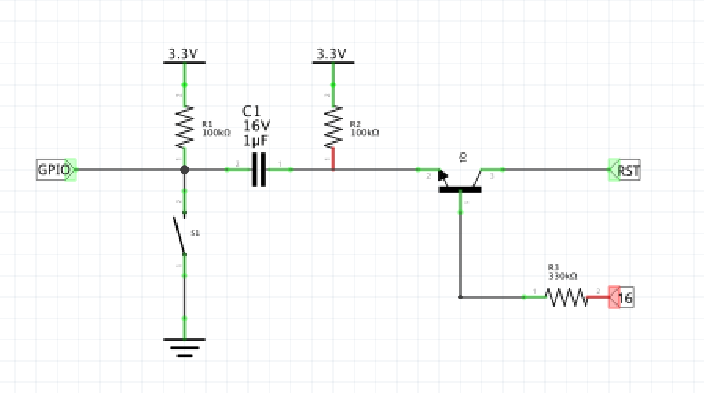
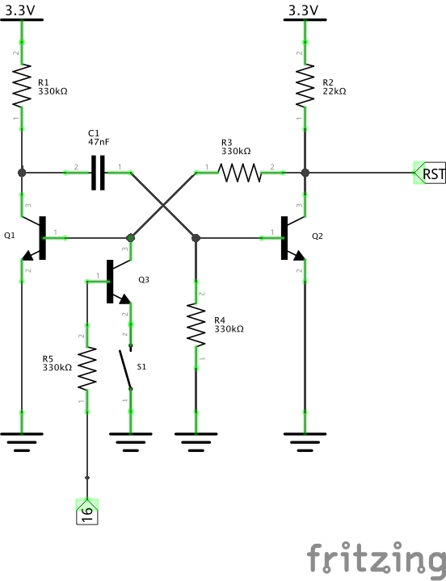
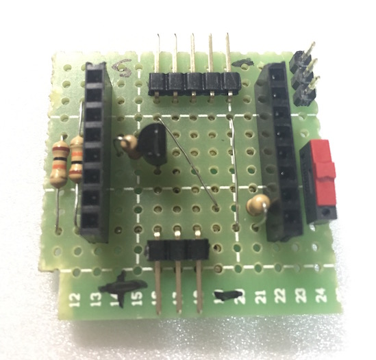
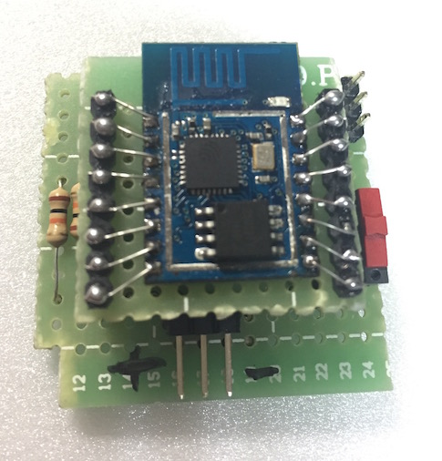
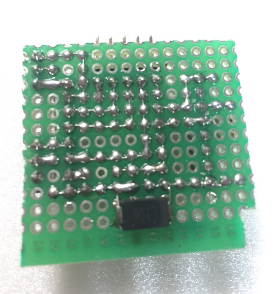
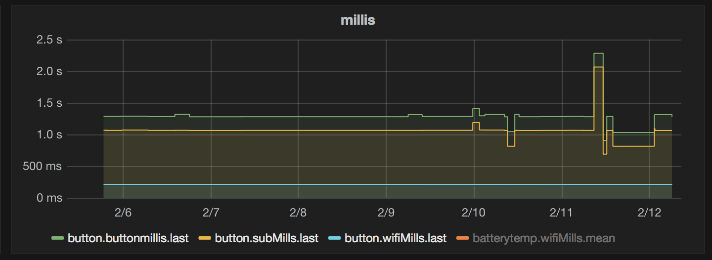

- ESP.deepSleep(0) .sleep forever
- Using GPIO16 and NPN TR, reset is not permitted while device is running. GPIO16 is in HIGH state while in deepsleep. GPIO16 will go LOW when ESP wakes up(digitalwrite to LOW).
- I think a sensor output to RST(monostable flip) and other GPIO can be used for interrupt triggered wake up and GPIO event monitoring.
- [video 1] [video 2][Source]
Minimal version using one NPN TR and one resistor.
 Mono state flip flop version. ref : external link
   Using static ip and deepsleep, WiFI connection done less than 300ms.